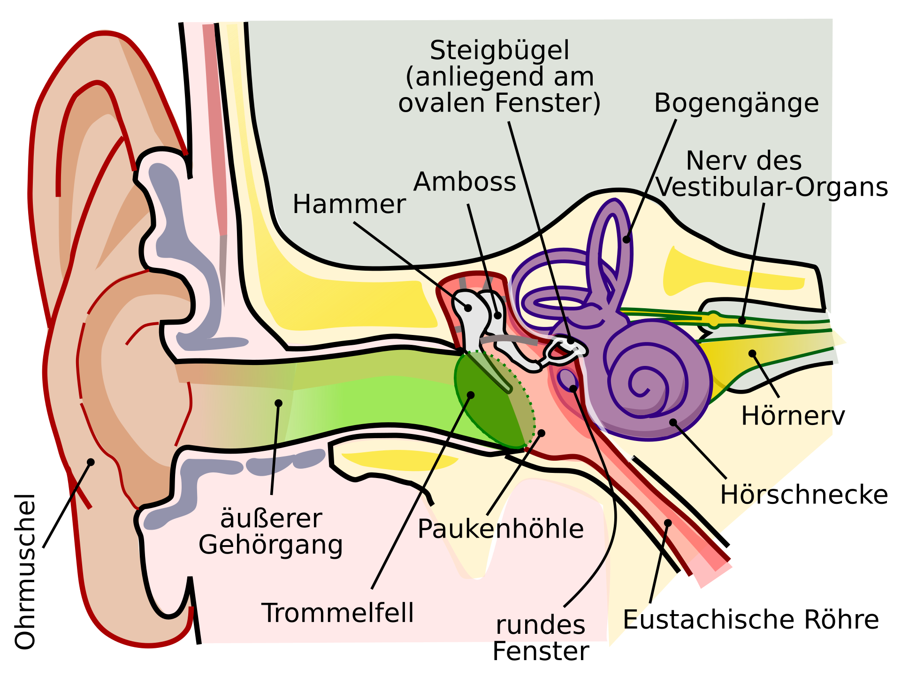

100%

Willkommen!
Klicke auf "Start", um die Reise zu beginnen!
Begleite eine Schallwelle auf ihrer spannenden Reise durch das Ohr!
Klicke auf "Start", um die Reise zu beginnen!
Du hast die Reise der Schallwelle durch das Ohr erfolgreich gemeistert!
Jetzt weißt du, wie aus Luftschwingungen in unserem Gehirn Töne entstehen.
Ohr-Grafik: Lars Chittka, Axel Brockmann, CC-BY 2.5, Quelle: Wikimedia Commons
Erstellt für den Physikunterricht Klasse 7 • Maria-von-Linden-Gymnasium